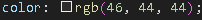
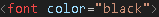
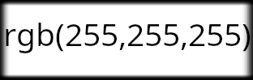
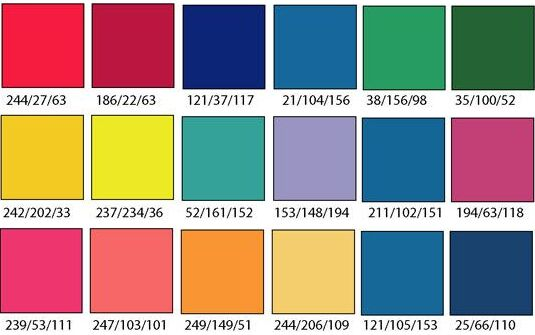
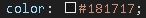
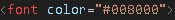

Wusstet ihr, dass es über 16 Mio. Farben gibt?
Dabei ist es für einen Entwickler unmöglich sie alle in Worten anzugeben, da
es nur 140 unterstütze Farbnamen in HTML gibt.
Daher werden wir uns heute die Farbkodierungen RGB und HEX genauer anschauen.
CSS:

HTML:

Ihr habt bestimmt schon mal sowas gesehen oder selbst beim Coden mithilfe eines Color-Pickers verwendet,
aber was bedeutet das eigentlich?
Hex, auch Hexadezimal, ist eine Farbkodierung wie RGB, die etwas kürzer ist, aber genau dasselbe bewirkt, nämlich die Darstellung der Farben.
Na ja es ist ganz einfach. Beides sind identische Farben, aber RGB gibt den Farbton genauer an.
Um das zu verinnerlichen muss man erstmal verstehen, dass der Computer durch das Dazugeben
der Farben Rot(R) Grün(G) und Blau(B)
jede Farbe darstellen kann. Dies nennt man auch additive Farbmischung,
da Farben dazugegeben werden.
Im Gegensatz dazu steht die subtraktive Farbmischung, die man aus dem Kunstunterricht kennt.
Dabei werden bestimmte Farben des weiß reflektierten Lichtes, welches aus den 3 Grundfarben besteht,
von der Oberfläche eines bestrahlten Objektes absorbiert und der Rest wird reflektiert.
Die Farbkodierung RGB gibt dabei für jede Farbe ihre Intensität im Gesamtbild an, jeweils eine für
Rot, Grün und Blau.
Bsp: rgb(0,0,0), die Farbintensität ist hier für Rot= 0, Grün= 0 und Blau= 0, also ergibt es eine schwarze Farbe,
da keine der Farben addiert werden.
Wenn man hingegen rgb(255,255,255) hat, dann ergibt es wiederum Weiß, weil alle Farben
miteinander addiert werden.

Weitere Beispiele (Pinterest):

Da es in der Kodierung drei Dezimalzahlen gibt, die maximal 255 sein können, lässt sich festellen, dass
rgb aus 3 Bytes besteht oder 24 Bits, welche sich in Binärzahlen umwandeln lassen.
Zum Beispiel ist rgb 255,0,255
= 11111111,
00000000,
11111111 in Binär
Jetzt fragt ihr euch ganz bestimmt, wozu wir diesen Binärcode brauchen und dazu kommen wir jetzt.
CSS:

HTML:

Ich bin mir sicher, dass euch diese Kombinationen aus # und Zahlen bereits bekannt vorkommt.
Aber auch hier stellt sich die Frage, was das eigentlich ist. In diesem Fall ist es schnell
beantwortet: Hex, auch Hexadezimal, ist eine Farbkodierung wie RGB, die etwas kürzer
ist, aber genau dasselbe bewirkt, nämlich die Darstellung der Farben.
Und wie bereits erwähnt brauchen wir hierfür jetzt das Vorwissen über rgb und Binärzahlen.
Genauer genommen brauchen wir jetzt den rgb Binärcode, um diesen in Hexadezimal umzuwandeln.
| Binär: | 1111 | 1111 | 0000 | 0000 | 1111 | 1111 |
|---|---|---|---|---|---|---|
| Dezimal: | 15 | 15 | 0 | 0 | 15 | 15 |
| Binär: | 1111 | 1111 | 0000 | 0000 | 1111 | 1111 |
|---|---|---|---|---|---|---|
| Dezimal: | 15 | 15 | 0 | 0 | 15 | 15 |
| Hexadezimal: | F | F | 0 | 0 | F | F |
Weiteres Beispiel:
| Binär: | 0010 | 1010 | 1101 | 0001 | 0001 | 0011 |
|---|---|---|---|---|---|---|
| Dezimal: | 15 | 15 | 0 | 0 | 15 | 15 |
| Hexadezimal: | 2 | F | D | 1 | 1 | 3 |
→ #2FD113
Um das Wissen über die Zahlensysteme weiter zu vertiefen, sollte man
auch wissen, wie man diese umrechnen kann.
Wiederholen wir zunächst aber die Umrechnung von Binär in Dezimal
und umgekehrt
Das Binärsystem basiert auf 2er Potenzen und lässt sich auch mit diesem errechnen.
11001 wäre in Dezimal somit die Summe aller Potenzen multipliziert mit der jeweiligen
Zahl an der Stelle der Potenz
11001 = 1×24 +
1×23 + 0×22
+ 0×21 + 1×20
110012 = 2510
→ also ist 11001 oder auch 110012 in Binär
gleich 25 bzw 2510 in Dezimal
Um eine Dezimalzahl dann in Binär umzurechnen schaut man, was die höchste 2er Potenz ist, die
in die Dezimalzahl rein passt. Dabei ergibt sich ein Rest, mit dem man die selbe Prozedur macht
75 zu Binär würde somit die Potenzen 26,
23, 21 und
20
bzw. die Zahlen 64, 8, 2 und 1 ergeben. Aus dem höchsten Exponenten 6 und niedrigstem Exponenten 0
erfahren wir, dass unsere Binärzahl 7 Stellen hat. Wir brauchen nur noch die Lücken zwischen den Potenzen
mit 0 zu füllen und dann haben wir unsere Dezimalzahl.
→ also ist 75 oder auch 7510 in Dezimal gleich 1001011 bzw 10010112 in Binär
Analog zur Umrechnung von Binärzahlen, gilt das selbe für Hexadezimalzahlen,
aber bei Hexadezimal wird mit 16er Potenzen gerechnet.
Nehmen wir als Beispiel 9C2F, hier haben wir die Potenzen
163, 162,
161, 160
bzw die Zahlen 4096, 256, 16, 1
jetzt errechnen wir die Summe aller Potenzen multipliziert mit der jeweiligen
Zahl/Symbol an der Stelle der Potenz
→ also ist 9C2F oder auch 9C2F16 in Hexadazimal gleich 40083 bzw 4008310 in Dezimal
Um eine Dezimalzahl in Hexadezimal umzuwandeln, teile die Dezimalzahl wiederholt durch 16
und notiere die Reste. Das Ergebnis ist die Hexadezimalzahl in umgekehrter Reihenfolge.
Jetzt den Rest in umgekehreter Reihenfolge aufschreiben
→
8
13
7
15
Schließlich wandeln wir diese Zahlen in Hexadezimalzahlen um
→
8
D
7
F
Die Dezimalzahl 3622310 ist somit die Hexadezimalzahl 8D7F16